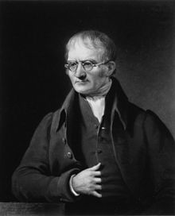

Définition atome :
Particule infiniment petite, insécable et homogène,
constituant, avec d'autres éléments de même nature, la matière
________________________________________________________________
________________________________________________________________
Un atome est une entité électriquement neutre composée de deux types d'élément :
→ un noyau atomique, lui-même constitué de protons et de
neutrons et concentrant pratiquement toute la masse de l'atome
→ des électrons qui gravitent autour du noyau.
________________________________________________________________
________________________________________________________________
Histoire de l’atome :
450 av JC: Thalès et Empédocle énoncent la théorie des 4 éléments.
C’est à dire que les corps sont formé uniquement de 4 éléments:
eau; terre; feu; air
________________________________________________________________
Démocrite émet l’idée que la matière était constituée de petites particules
indivisibles appelées atomes cependant la théorie est bien moins accepté
________________________________________________________________
19ème siècle: les travaux expérimentaux de John Dalton père de la théorie
atomiste prouve que la théorie des 4 éléments était fausse et que la matière
était constituée d’atomes ;

________________________________________________________________
Au cours du 20ème siècle, plusieurs scientifiques ont proposé leur modèle
de l’atome au fur et à mesure que les connaissances évoluent :
1904:
Thomson découvre l’électron et prend pour modèle de l’atome celui
d’un pudding chargé positivement fourré l'électron chargé négativement.
________________________________________________________________
1909: Rutherford découvre que l’atome est constitué d’un élément central,
le noyau. Ce dernier est 100 000 fois plus petit que l’atome.
Dans son modèle, les électrons tournent autour du noyau ;
________________________________________________________________
1913: Pour Niels Bohr, il pense que les électrons se déplacent autour du noyau
sur des orbites (couches) bien définies. Il peut y en avoir
plusieurs sur une seule couche.
________________________________________________________________
1925: Selon Erwin Schrödinger, on ne peut connaître les positions d’un
électron précisément, mais on définit une probabilité de trouver un électron.
________________________________________________________________